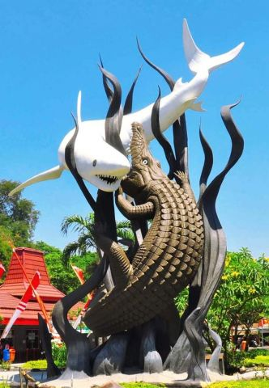
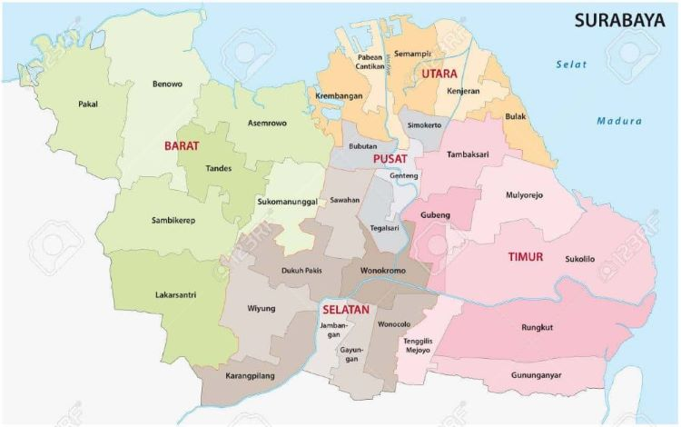

Sejarah

Kata Surabaya (bahasa Sanskerta: Śūrabhaya) sering diartikan secara filosofis sebagai lambang perjuangan antara darat dan air. Selain itu, dari kata Surabaya juga muncul mitos pertempuran antara ikan sura (ikan hiu) dan baya (buaya), yang menimbulkan dugaan bahwa terbentuknya nama "Surabaya" muncul setelah terjadinya pertempuran tersebut.
Selain itu Surabaya juga dikenal dengan sebutan Kota Pahlawan karena Pertempuran 10 November 1945, yaitu sejarah perjuangan Arek-Arek Suroboyo (Pemuda-pemuda Surabaya) dalam mempertahankan kemerdekaan bangsa Indonesia dari serangan penjajah.
Geografis

Kota Surabaya terdiri dari Daratan Alluvium; Formasi Kabuh; Pucangan; Lidah; Madura; dan Sonde. Sedangkan untuk wilayah perairan, Surabaya tidak berada pada jalur sesar aktif ataupun berhadapan langsung dengan samudra, sehingga relatif aman dari bencana alam endogen. Berdasarkan kondisi geologi dan wilayah perairannya, Surabaya dikategorikan ke dalam kawasan yang relatif aman terhadap bencana gempa bumi maupun tanah amblesan sehingga pembangunan infrastruktur tidak memerlukan rekayasa geoteknik yang dapat menelan biaya besar.
Surabaya memiliki iklim tropis seperti kota besar di Indonesia pada umumnya. Berdasarkan klasifikasi iklim Koppen, Kota Surabaya termasuk dalam kategori iklim tropis basah dan kering dengan dua musim dalam setahun yaitu musim hujan dan musim kemarau. Curah hujan di Surabaya rata-rata 165,3 mm. Curah hujan tertinggi di atas 200 mm terjadi pada kurun Januari hingga Maret dan November hingga Desember. Suhu udara rata-rata di Surabaya berkisar antara 23,6 °C hingga 33,8 °C.
Wisata
Banyak tempat wisata di Surabaya yang berhubungan dengan sejarah perjuangan pahlawan kemerdekaan di kota yang berjuluk Kota Pahlawan itu. Tapi tak hanya itu, Surabaya menyimpan segudang tempat wisata yang menawarkan edukasi dan tentu saja hiburan. Maka enggak heran kalau Surabaya selalu menjadi kota pilihan destinasi wisata puluhan ribu masyarakat Indonesia saat berlibur.
Kampung Arab (Sunan Ampel)

Kampung ini dihuni oleh penduduknya yang mayoritas berasal dari Arab. Kampung Arab menjadi salah satu kampung yang dijadikan tempat wisata di Surabaya dan mendapat perhatian dari banyak wisatawan. Salah satu alasan utamanya adalah karena bisa dijadikan tujuan wisata religi. Selain bisa mengenal budaya Arab yang masih kental, kamu juga bisa berburu souvenir mulai dari pakaian, minyak wangi, hingga peralatan ibadah yang dijual di kampung yang terletak di kawasan Ampel tersebut
Kebun Binatang Surabaya

Kebun Binatang Surabaya merupakan tempat wisata di Surabaya yang selalu ramai dan diminati oleh wisatawan. Lokasinya yang cukup strategis dan sangat mendukung serta terletak di pusat kota membuat Kebun Binatang Surabaya selalu ramai setiap harinya. Kebun binatang ini jadi salah satu yang tertua di Indonesia.